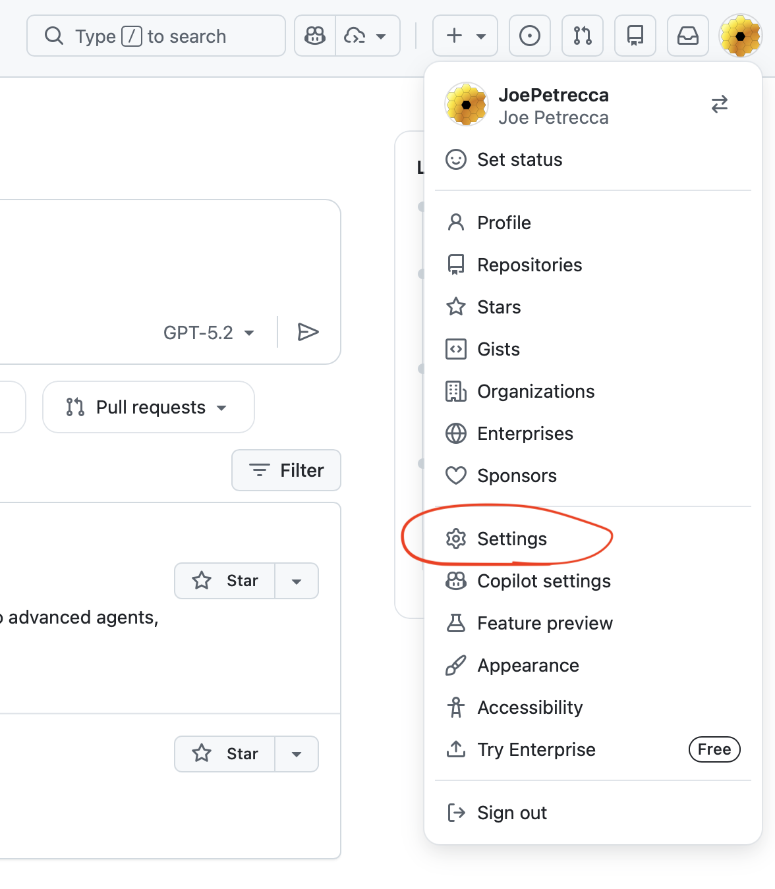
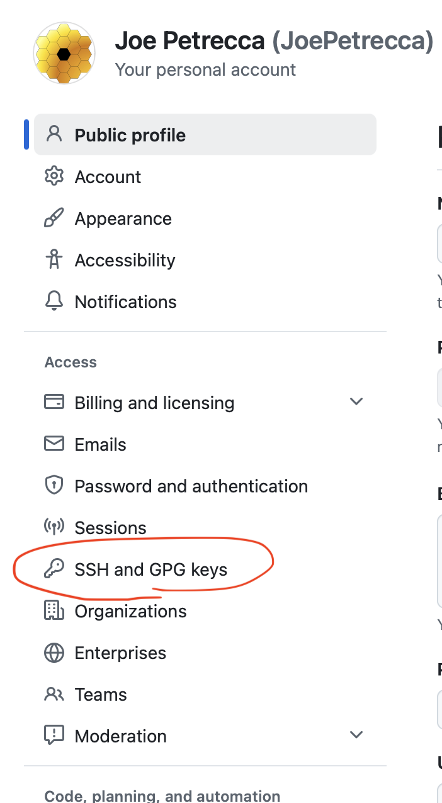
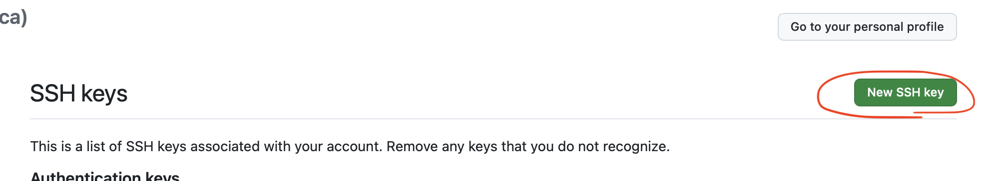
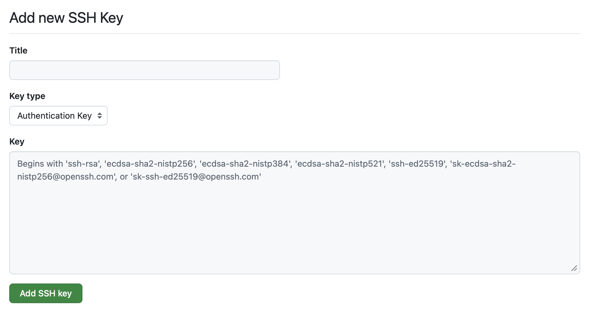

SSH keys are one of those things that sound more intimidating than they actually are.
The short version is this: instead of typing your password over and over, you create a key on your computer and then tell other machines or services to trust it. After that, things get much smoother.
This is useful for:
- Logging into remote machines
- Using GitHub over SSH
- Avoiding repeated password prompts
Step 1: Check whether you already have a key
Before making a new one, check whether you already have SSH keys.
Run:
ls -la ~/.sshIf you already see files like these:
id_ed25519
id_ed25519.pubThen you probably already have a key pair.
The .pub file is the public key. That is the one you
share.
Step 2: Generate a new key if you do not have one
The recommended kind of SSH key is ed25519.
Run:
ssh-keygen -t ed25519 -C "your_email@example.com"
You can replace your_email@example.com with your
email. This is just a label so you know what the key is.
After that, it will ask you a few questions.
Where to save the key
You will see something like:
Enter file in which to save the key (/Users/yourname/.ssh/id_ed25519):Just press Enter. That uses the default location, which is usually exactly what you want.
Passphrase
Then it will ask for a passphrase.
You have two options:
- Type a passphrase for extra security
- Or just press Enter twice if you do not want one
If you are new to this, either is fine. A passphrase is more secure, but it does mean one extra thing to remember.
When it finishes, you should see something like:
Your identification has been saved in /Users/yourname/.ssh/id_ed25519
Your public key has been saved in /Users/yourname/.ssh/id_ed25519.pubid_ed25519. Keep that one private.
The public key is
id_ed25519.pub. That is the one you
copy to GitHub or other machines.
Step 3: View your public key
Whether you already had a key or just made one, you can print the public key with:
cat ~/.ssh/id_ed25519.pubThis will print out one long line of text.
That is your public key. At this point, you can basically go yay, because this is the thing you need.
Where to add the key
Copy the public key and paste it into GitHub, GitLab, or another service that supports SSH keys.
Copy the public key to a remote machine so future SSH logins are easier.
Option A: Copy it into GitHub or another website
A very common use is adding your SSH key to GitHub.
You can print it:
cat ~/.ssh/id_ed25519.pubThen copy the whole line and paste it into the SSH keys section of GitHub, GitLab, or wherever else you need it.
Make sure you copy the entire line, starting with something like:
ssh-ed25519 ...Include the label at the end too.
Option B: Add it to a remote machine
If you want to log into a remote machine without typing your password every time, you can copy your key over directly with:
ssh-copy-id username@remote_machineFor example:
ssh-copy-id YOUR_USERNAME@moria.egr.msu.eduThis will ask for your password one last time, and then it adds your public key to the remote machine's trusted keys.
After that, future logins should be much easier.
If ssh-copy-id does not work
Sometimes that command is not installed by default.
In that case, you can still do it manually.
First, print your public key:
cat ~/.ssh/id_ed25519.pubCopy the output.
Then log into the remote machine normally:
ssh username@remote_machineMake sure the .ssh directory exists:
mkdir -p ~/.ssh
chmod 700 ~/.sshThen open the authorized keys file:
nano ~/.ssh/authorized_keysPaste your public key as a new line, save, and exit.
Then run:
chmod 600 ~/.ssh/authorized_keys
That does the same thing as ssh-copy-id, just
manually.
Quick version
If you need the short version:
ls -la ~/.ssh
ssh-keygen -t ed25519 -C "your_email@example.com"
cat ~/.ssh/id_ed25519.pub
ssh-copy-id username@remote_machineShare
id_ed25519.pub, not
id_ed25519.
Adding your SSH key to GitHub
Adding your SSH key to your GitHub account is especially important if you plan to:
- Clone repositories using
git@github.com:... - Work on a remote machine, like a cluster, and pull or push code
Step 1: Go to GitHub Settings
Click your profile icon in the top right and go to Settings.

Step 2: Navigate to SSH Keys
On the left sidebar, click SSH and GPG keys.

Step 3: Add a new SSH key
Click the New SSH key button.

Step 4: Paste your public key
Back in your terminal, run:
cat ~/.ssh/id_ed25519.pubCopy the entire output.
Then:
- Give it a name, like My Laptop or Moria Cluster
- Paste the key into the big box

Click Add SSH key.
Important note for remote machines
If you are working on a remote machine, like a cluster or server,
and want to git clone from GitHub on that machine, you
need to:
- Generate an SSH key on that machine
- Run:
cat ~/.ssh/id_ed25519.pub- Add that key to GitHub as well
Each machine needs its own key. Your laptop's key will not automatically work on a remote system.